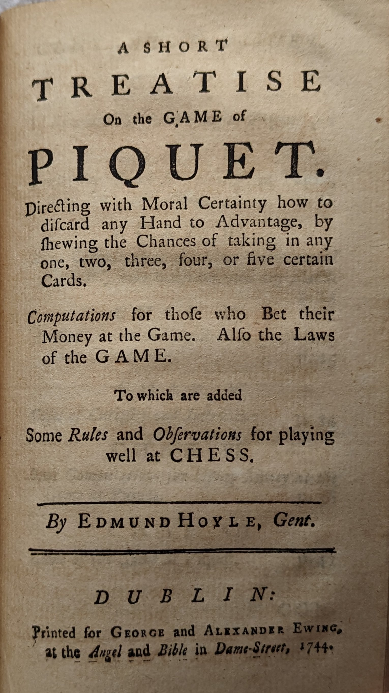

A Descriptive Bibliography of Edmond Hoyle
Copyright © 2014-26 by David Levy
(page updated 2026-01-30)User Guide
Piquet.D.1
A Short Treatise on the Game of Piquet, printed for George and Alexander Ewing, first Dublin edition, 1744.
 |
Title: | A SHORT | TREATISE | On the GAME of | PIQUET. | Directing with Moral Certainty how to | diſcard any Hand to Advantage, by | ſhewing the Chances of taking in any | one, two, three, four, or five certain | Cards. | Computations for thoſe who Bet their | Money at the Game. Alſo the Laws | of the GAME. | To which are added, | Some Rules and Obſervations for playing | well at CHESS. | [rule] | By Edmund Hoyle, Gent. | [double rule] | DUBLIN: | Printed for George and Alexander Ewing, | at the Angel and Bible in Dame-Street, 1744. |
| Collation: | 12o: [A]2 B–E8/4 F8 G2 [$½ signed]; 36 leaves, pp. [4 ] [1] 2–68 |
| Contents: | Signature (Page) Reference | Contents | Signature (Page) Reference | Running Titles |
| A1r | title | |||
| A1v | blank | |||
| A2r | ‘CONTENTS for PIQUET. | [...]’ | |||
| A2v | ‘CONTENTS for CHESS. | [...]’ | |||
| B1r–E4r (1–47) | ‘[double rule] | A | TREATISE | On the GAME of | PIQUET. | [...]’ | B1v–E4r (2–47) | ‘A Treatiſe on Piquet.’ | |
| E4v–G2v (48–68) | ‘[double rule] | SOME | Rules and Obſservations | FOR | Playing well at CHESS. | [...]’ | E4v–G2r (48–67) | ‘Rules and Obſervations | for playing at CHESS.’ | |
| on F4v (56) | ‘Rules and Obſervations.’ | |||
| on G1v (66) | ‘Rules and Obſervatsons’ | |||
| G2v (68) | Rules and Obſervations &c. |
| Publisher: | George and Alexander Ewing |
| Notices: | 1744-05-01 The Dublin Courant: "This day is published...Price 6d. halfpenny" |
| Price: | 6½d. (title, advertisement) |
| References: | ESTC T88041, Jessel 790, Marshall s7 no.8 p264 (1889-10-05), Rather 19 |
| Copies Seen in Collections: | L [7917 de.73] (ECCO) (see Ewing.B); O [Jessel f.541(3)] (see Ewing.A); O [Jessel f.570(4)] (see Ewing.B); O [Jessel f.571(4)] (see Ewing.B); NvLN [GV1201.H83 1743] (see Ewing.A); OCl [789.87H F45D] (see Ewing.B); Levy [1609] (see Ewing.B) |
| Other Copies: | Du [34.R.11/3]; HAG [KW 60 J 110] (Google) |
| Other Copies in Collections: | C [Hib.7.745.29] (see Ewing.B); CaOTP [795 H598] (see Ewing.B); ICD [SPC. 795 H868P] (see Ewing.B); LU [GV1243.H7] (see Ewing.A); WaS [R795 H852P] (see Ewing.B); AuNU [RB 4645.44] (see Ewing.B) |